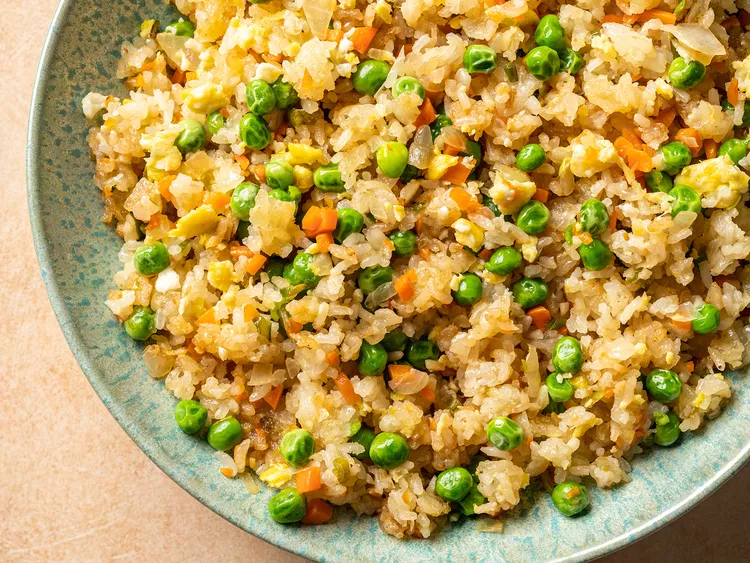
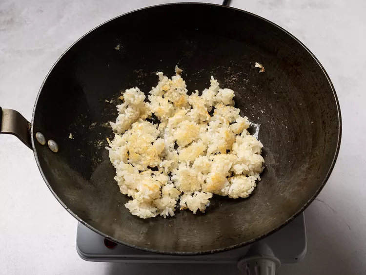
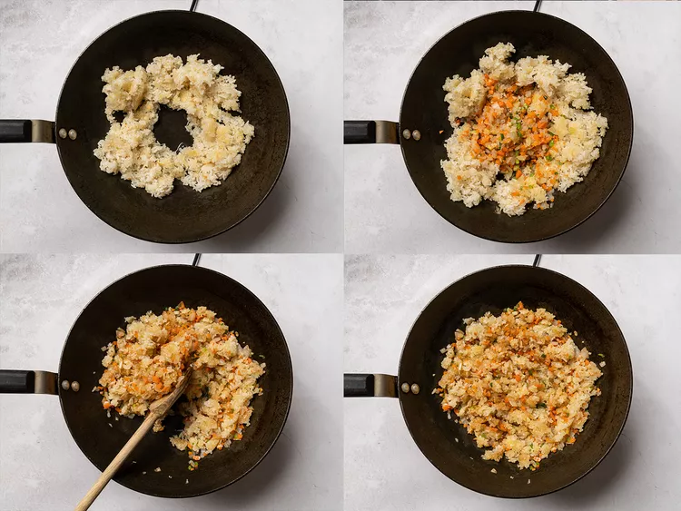
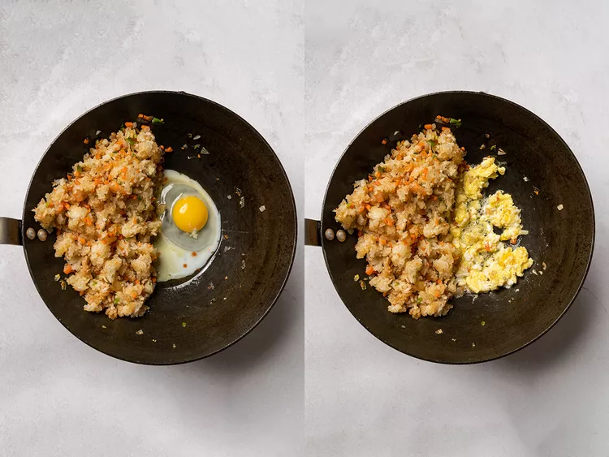
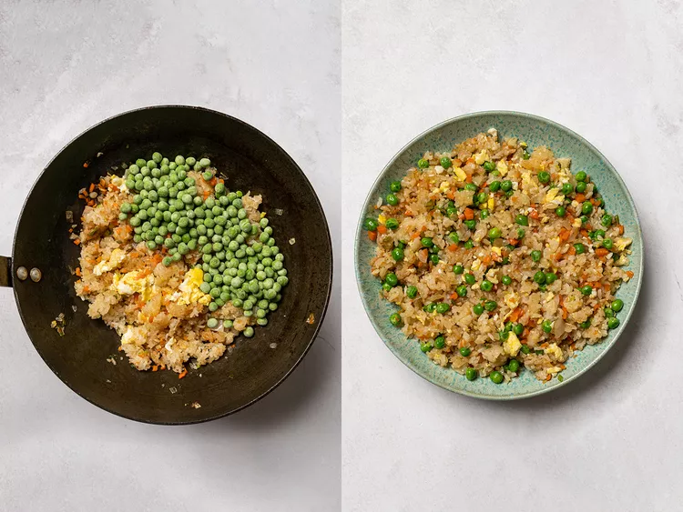

Fried Rice by Kenji Lopez Alt

Fried rice is a great way to use up leftovers; it is infinitely variable, and there are
plenty of variables worth testing out. Couple that with the number of rules that everyone
says you simply must follow (you must use day-old rice, you must use medium-grain, et cetera)
, and it seems like the perfect subject for some hardcore testing and myth-busting.
Ingredients
- 2 cups cooked white rice (12 ounces; 350g)
- 2 tablespoons (30ml) vegetable or canola oil, divided
- 1 small onion, finely chopped (4 ounces; 115g)
- 1 medium carrot, peeled and cut into small dice (3 ounces; 85g)
- 2 scallions, thinly sliced (1 ounce; 30g)
- 2 medium cloves garlic, minced (about 2 teaspoons; 5g)
- 1 teaspoon (5ml) soy sauce
- 1 teaspoon (5ml) toasted sesame oil
- Kosher salt and ground white pepper
- 1 large egg
- 4 ounces (115g) frozen peas
Directions
- If using day-old rice (see notes), transfer to a medium bowl and break rice up with
your hands into individual grains before proceeding. Heat 1/2 tablespoon (7ml) vegetable oil in a wok
over high heat until smoking. Add half of rice and cook, stirring and tossing, until rice is pale brown and toasted
and has a lightly chewy texture, about 3 minutes. Transfer to a medium bowl. Repeat with another 1/2 tablespoon oil
and remaining rice.

- Return rice to wok and press it up the sides, leaving a space in the middle. Add 1/2 tablespoon (7ml)
oil to the space. Add onion, carrot, scallions and garlic and cook, stirring gently, until lightly
softened and fragrant, about 1 minute. Toss with rice to combine. Add soy sauce and sesame oil and toss
to coat. Season to taste with salt and white pepper.

- Push rice to the side of wok and add remaining 1/2 tablespoon (7ml) oil. Break egg into oil and season
with a little salt. Use a spatula to scramble egg, breaking it up into small bits. Toss egg and rice
together.

- Add frozen peas and continue to toss and stir until peas are thawed and every grain of rice
is seperate. Serve immediately.
